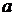
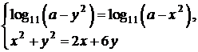

Дайте развернутый ответ.
Найдите все значения , при каждом из которых система уравнений


имеет ровно два различных решения.
КЭС: 2.9 Системы и совокупности уравнений и неравенств; 2.10 Уравнения, неравенства и системы с параметрами
Тип ответа: Развернутый ответ
Источник ФИПИ